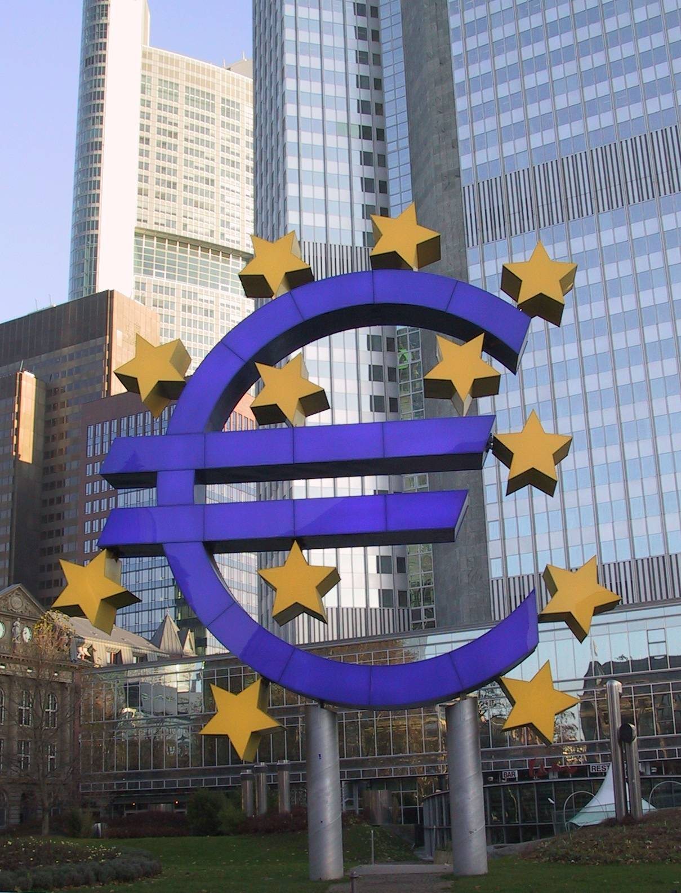

 "L'Euro (€) est la monnaie de l'union économique et monétaire formée au sein de l'Union européenne ; elle est commune à dix-sept états membres de l'Union européenne qui forment ainsi la zone euro. Quatre micro-états (Andorre, Monaco, Saint-Marin et le vatican) sont également autorisés à utiliser l'euro et certains pays européens, comme le Monténégro ou le Kosovo, l'utilisent de facto tandis que d'autres ont leurs monnaies nationales liées à l'euro.
En usage dès 1999, pour les transactions financières européennes, il est mis en circulation le 1er janvier 2002 sous sa forme fiduciare. Il succède à l'ECU, "l'unité de compte européenne", mise en service en 1979.
L'euro est la deuxième monnaie au monde pour le montant des transactions, derrière le dollar américain, mais depuisoctobre 2006 la première monnaie au monde pour la quantité de billets en circulation, avec 610 milliards d'euros.
|